A pocos pasos de la playa más libre de Oaxaca, La Cabaña es un refugio
pensado para desconectarte del ruido y reconectar con lo que importa. Dos pisos, espacio
para cuatro personas y el sonido del mar como única compañía.
Recorre cada rincón de este espacio con nosotros.
El primer piso
Al cruzar la puerta te recibe un espacio abierto, cálido y lleno de luz natural. Pisos de madera, muebles artesanales y la brisa del Pacífico entrando por cada ventana.
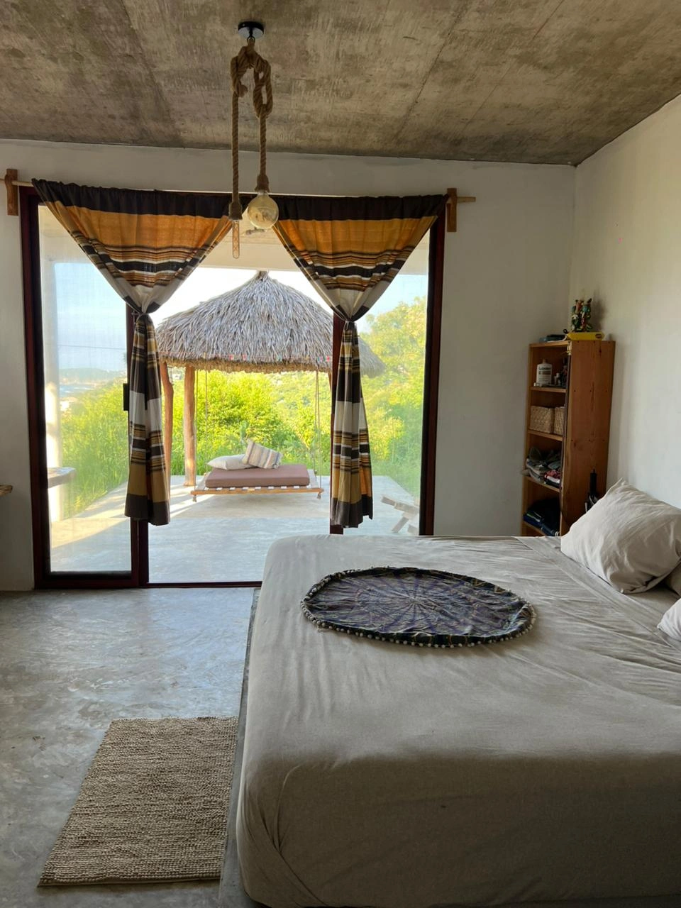
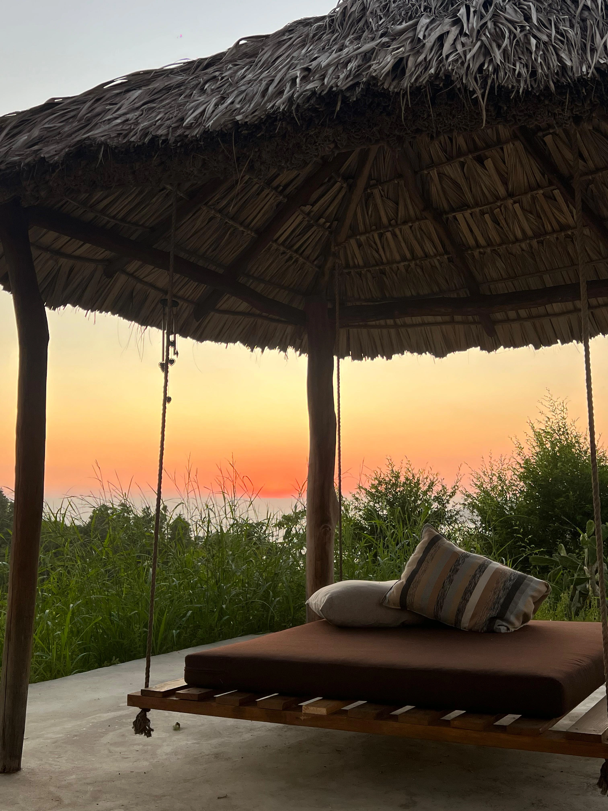
El segundo piso
Sube las escaleras y encuentra las recámaras: dos camas dobles, espacio para cuatro personas y una vista que te acompaña desde que abres los ojos.
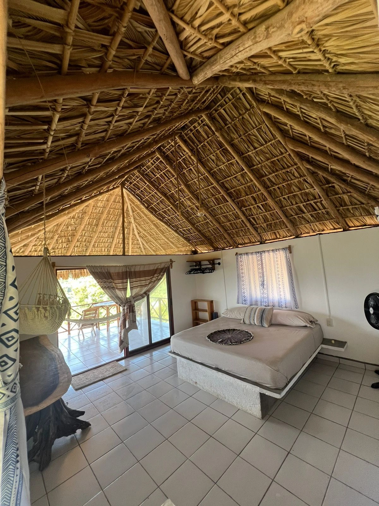
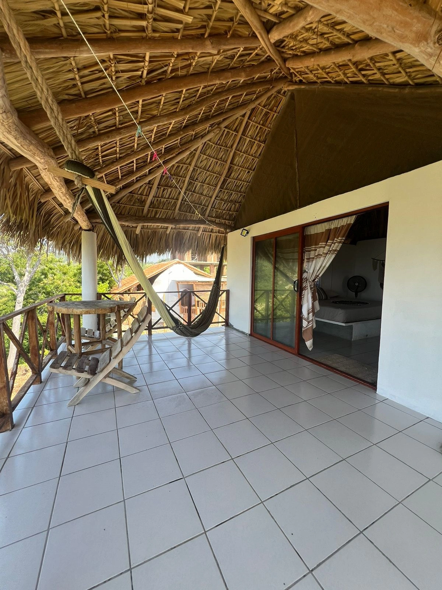
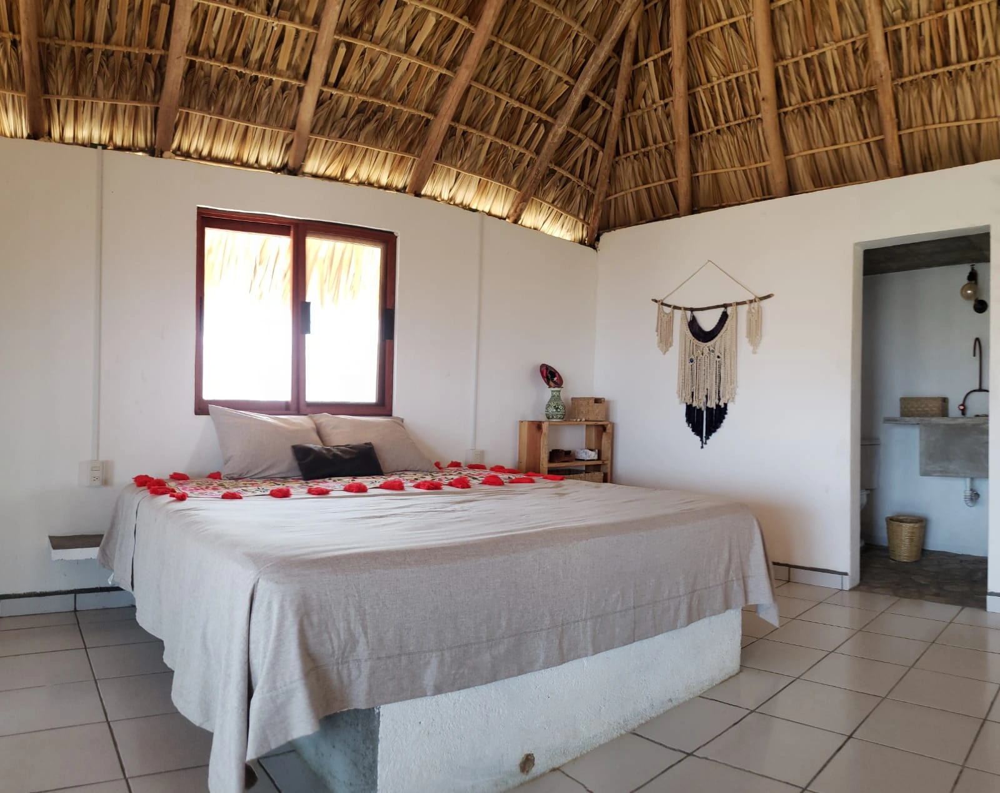
Cocina y baño
Todo lo que necesitas para sentirte en casa. Una cocina equipada y un baño rústico que no pierde detalle.
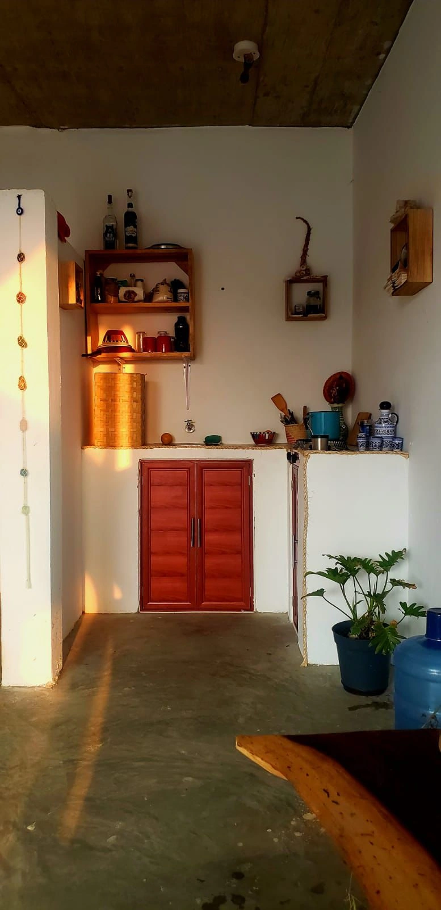
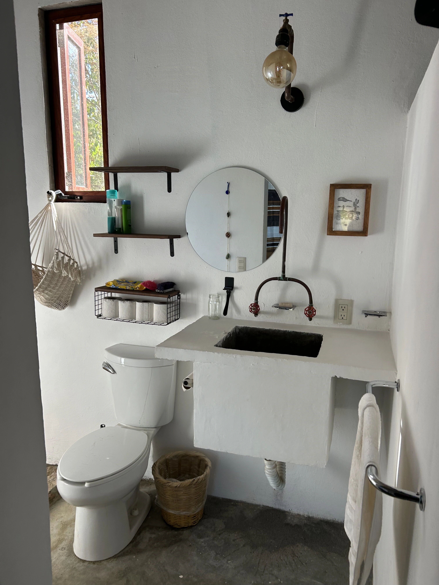
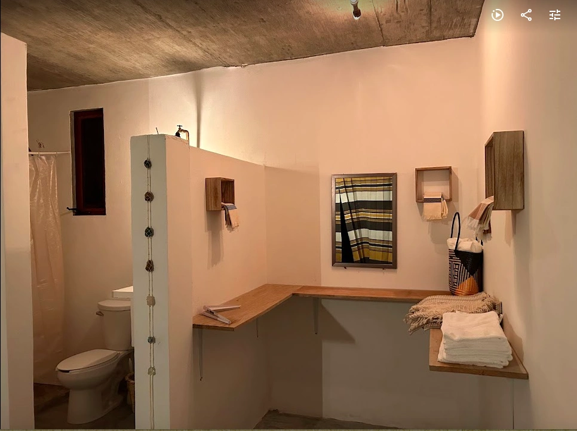
La playa
Sales de la cabaña, caminas unos metros y llegas. Arena, olas y atardeceres que no necesitan filtro. Zipolite en su forma más pura.
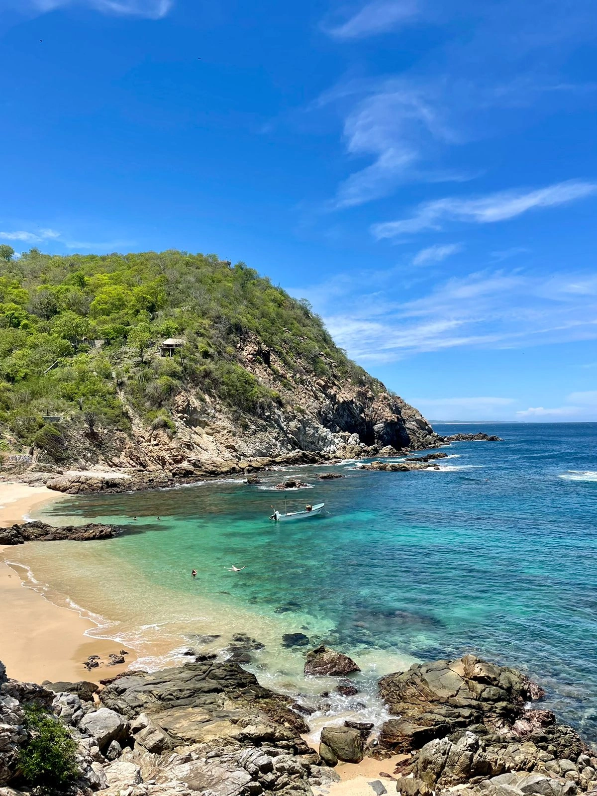
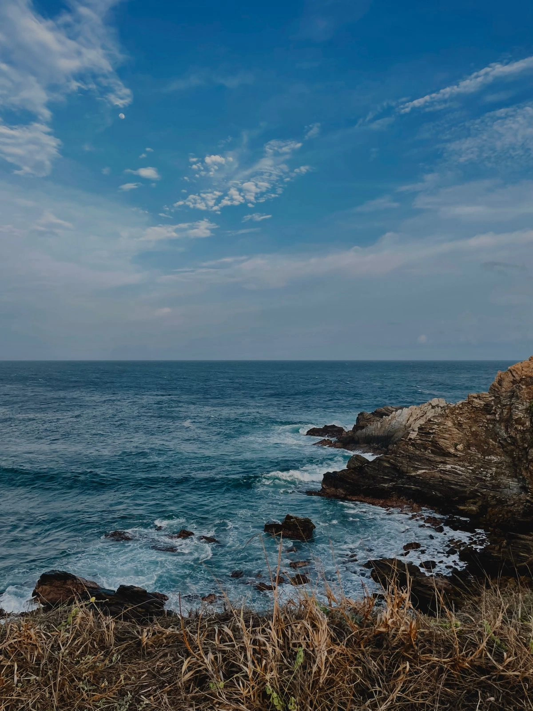
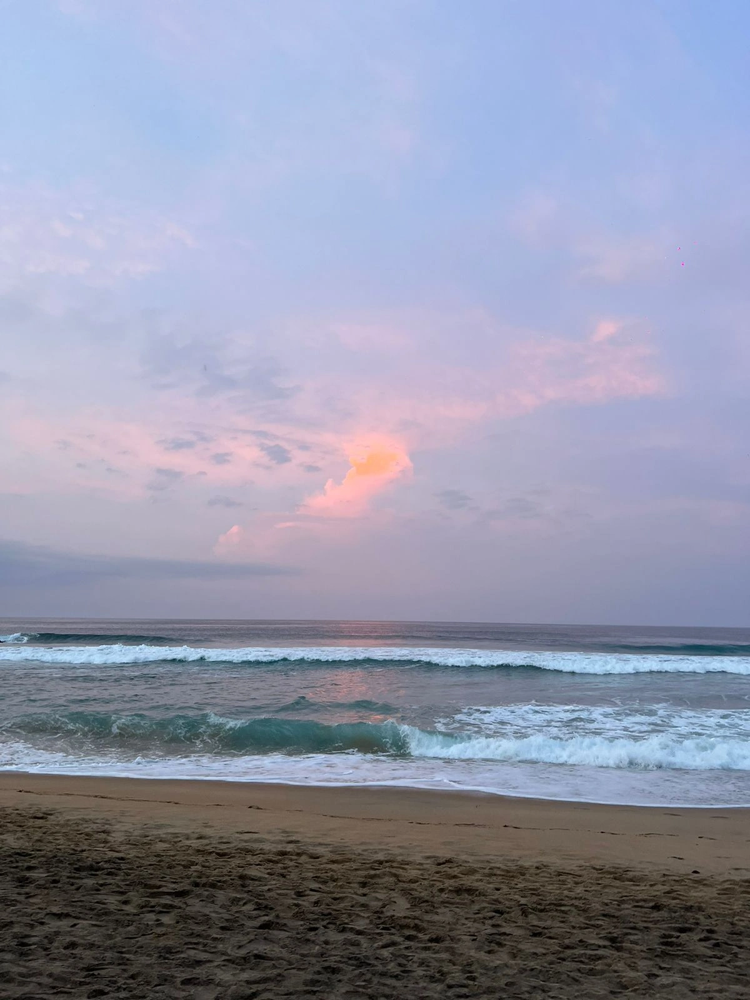
Ven a conocerla
¿Te imaginas despertar con el sonido del mar? Escríbenos y reserva tu experiencia en La Cabaña.
Contáctanos →